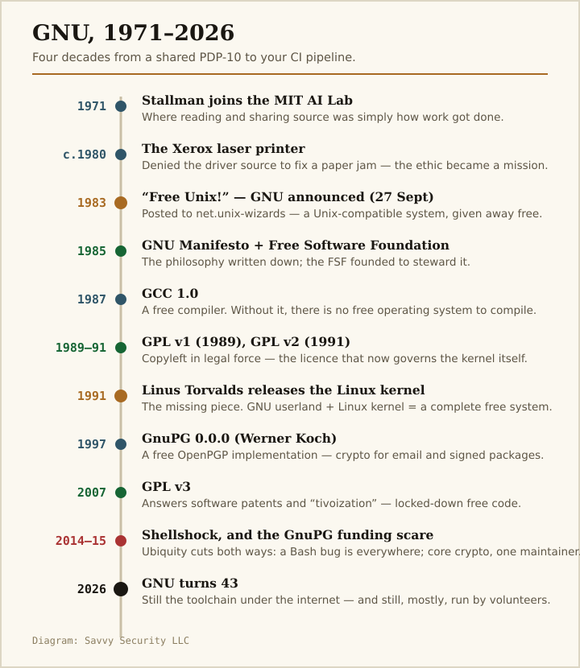
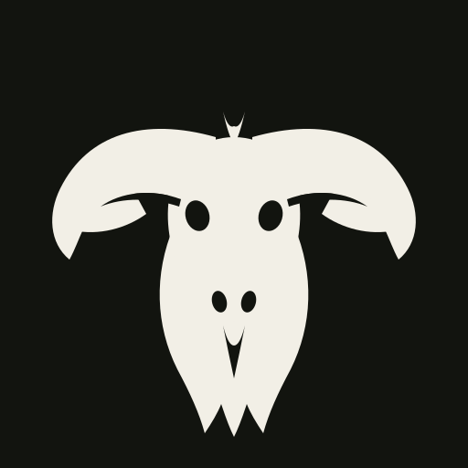
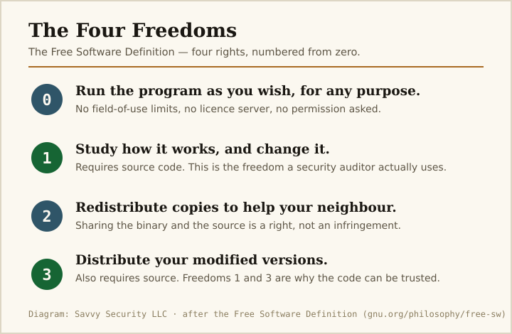
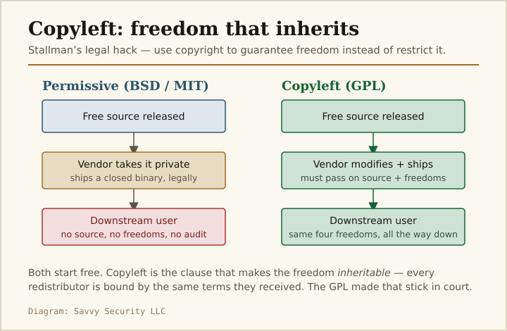
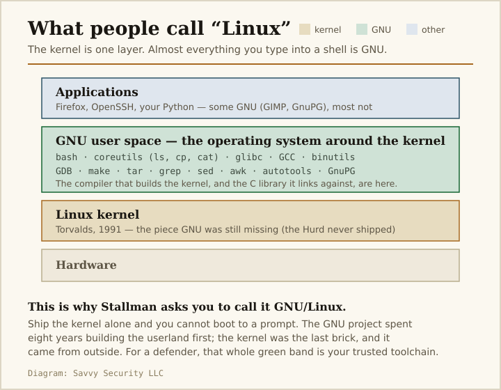

Savvy Security LLC · Free Software / Supply Chain
The Wildebeest in the Toolchain
Forty-three years ago today, a programmer at MIT promised to give away a free Unix. He very nearly did — and the part he built is now the trusted computing base under your entire industry.
Why a security team should care that a wildebeest is having a birthday
On 27 September 1983, Richard Stallman posted a message to a Usenet newsgroup announcing that he would build a complete, free replacement for Unix and give it away. That message is forty-three years old today. The project it launched — GNU, a recursive acronym for GNU’s Not Unix — never quite finished the last piece it set out to build. It finished almost everything else.
If you have compiled a program, signed a commit, encrypted an email, patched a Debian box, or shipped a container this decade, you have leaned your full weight on GNU code. The compiler, the C library, the shell, the core utilities, the debugger, the crypto: overwhelmingly GNU. This is not nostalgia. It is an inventory of your trusted computing base.
And GNU is more than an inventory. It is the clearest working argument we have about the relationship between source you can read and code you can trust — a relationship that is not the identity most people assume it is. That argument is the reason this essay is worth a security professional’s time on a Sunday. Let us take the birthday seriously.

Part I — The Lab
A culture where reading the source was simply how you worked
Richard Matthew Stallman arrived at the MIT Artificial Intelligence Laboratory in 1971. The lab ran on a shared PDP-10 and an ethic that nobody had written down, because it did not yet need defending. Steven Levy, who documented that world in his 1984 book Hackers, gave the ethic its canonical form: a belief that access to computers should be unlimited, that you learn by taking things apart — the “Hands-On Imperative” — and, above all, one principle that a modern reader recognises instantly as a philosophy of software:
“All information should be free.”
The MIT hacker ethic, as documented in Steven Levy, Hackers: Heroes of the Computer Revolution, 1984
In that lab, if a program annoyed you, you read its source and fixed it. This was not activism. It was Tuesday. The source was there, and improving it was the whole point of being a hacker — a word that then carried none of its later criminal connotation and everything of its original one: someone who understands a system deeply enough to bend it.

The printer that would not tell you why it was jammed
The world that made that ethic possible was already dying. Around 1980 the AI Lab took delivery of a Xerox 9700 laser printer. It jammed, as printers do, but this one came with a driver whose source code Xerox would not release. Stallman could not do the thing that had defined his professional life — open the code, add a routine to notify users of a jam, and move on. The tool now belonged to someone else, and that someone had used a licence to place it beyond inspection.
Sam Williams, in the biography Free as in Freedom, treats this as the radicalising moment, and it is easy to see why. The printer is a small thing. The principle underneath it is not: a device you depend on, running code you are forbidden to read, is a device you cannot fully trust and cannot fix. Every security professional who has ever filed a support ticket into a vendor’s black box and waited has felt the exact frustration that Stallman decided, uniquely, to do something structural about.
Strip away the politics and the founding grievance of the free software movement is an auditability grievance. The demand was never fundamentally about price. It was about the right to inspect, modify, and verify the systems you rely on — which is, word for word, the demand a security auditor makes of every component in scope.
Stallman was reacting to a supply-chain trust problem in 1980, using that phrase’s modern meaning before the industry had the vocabulary for it. The Xerox driver was an opaque dependency with privileged access to a shared resource. He wanted to read it. He was told no. Forty-three years of consequences followed from that no.
Part II — “Free Unix!”
The announcement
On 27 September 1983, Stallman posted to the net.unix-wizards and net.usoft newsgroups. The message opened with two words that read, in retrospect, like a manifesto compressed to a slogan: “Free Unix!” It went on:
“Starting this Thanksgiving I am going to write a complete Unix-compatible software system called GNU (for Gnu’s Not Unix), and give it away free to everyone who can use it. Contributions of time, money, programs and equipment are greatly needed.”
Richard Stallman, initial GNU announcement, net.unix-wizards, 27 September 1983
Unix-compatible was the strategic masterstroke. Rather than invent a new operating system that nobody knew how to use, Stallman would clone the interfaces of the one everybody already used, so that GNU could be adopted a piece at a time — a free replacement compiler here, a free replacement shell there — until, component by component, the proprietary original had been displaced from underneath running systems. It was migration by substitution, and it worked.
In January 1984 he resigned from MIT. The reason was itself a piece of security thinking: if he remained an employee, the university might claim ownership of his work and impose its own licensing terms. To keep the code free, he had to make sure no institution had a claim on it. He removed himself from the trust boundary.
Writing the philosophy down
In 1985 Stallman published the GNU Manifesto and founded the Free Software Foundation. The manifesto stated the ethical core plainly:
“I consider that the Golden Rule requires that if I like a program I must share it with other people who like it.”
Richard Stallman, The GNU Manifesto, 1985
The movement’s most persistent confusion — that “free” means gratis — Stallman addressed with a line that has done more clarifying work than any other he wrote:
The formal definition, still maintained today, resolves that liberty into four specific freedoms — and, because Stallman is a programmer, the list begins at zero.

The four freedoms are usually read as an ethical statement. Read them instead as a verification specification. Freedom 1 — study and change — is unenforceable without source, so the definition hard-requires source disclosure. Freedom 3 — redistribute your modifications — guarantees that a fix you make can reach the people who need it without a vendor’s permission.
That is the difference between filing a CVE and waiting, versus patching the component yourself the same afternoon. Free software does not promise the code is secure. It promises you are allowed to find out, and allowed to respond. Those are separate guarantees from security, and both are prerequisites for it.
Part III — Copyleft
Using copyright against itself
A promise to share is worth nothing if the next person in the chain can take your shared code, improve it, and lock the result away. Stallman’s answer was the cleverest legal manoeuvre in the history of software licensing. Rather than abandon copyright, he weaponised it. The GNU General Public License — GPLv1 in 1989, the enormously influential GPLv2 in 1991, and GPLv3 in 2007 — uses the full force of copyright law to impose a single, self-propagating condition: you may do almost anything with this code, provided that anyone you pass it to receives the same freedoms you did, including the source.
This is copyleft, and its defining property is inheritance. The freedom is not a one-time grant that a downstream vendor can strip; it is a term of the licence that travels with the code forever.

Economists took the free software movement seriously earlier than most people remember, precisely because it looked impossible: why would rational, skilled people give away enormously valuable work for free? Josh Lerner and Jean Tirole answered the question in the Journal of Industrial Economics in 2002, framing contribution as a rational investment in reputation and skill-signalling rather than an act of charity. That same year the legal scholar Yochai Benkler, in the Yale Law Journal, argued that GNU and Linux were evidence of a genuinely new mode of production — “commons-based peer production” — that neither the firm nor the market fully explained. And a landmark MIT Press volume, Perspectives on Free and Open Source Software, collected the empirical work, including Karim Lakhani and Robert Wolf’s survey showing that the single strongest motivator among contributors was, simply, that the work was creative and enjoyable.
The legal scholar Lawrence Lessig, writing the foreword to Stallman’s collected essays, put the historical claim as plainly as anyone has:
“Every generation has its philosopher — a writer or an artist who captures the imagination of a time… Our generation has a philosopher. He is not an artist, or a professional writer. He is a programmer.”
Lawrence Lessig, foreword to Free Software, Free Society, 2002
Copyleft is a governance control, and in 2026 it is a supply-chain control. The licence attached to a dependency determines what you are legally required to disclose, what an acquirer inherits in due diligence, and whether a component can be quietly forked and re-closed by a vendor upstream of you.
License posture is supply-chain posture. This is why your SBOM has a licence column, why GPL-compliance scanning is a standing line item, and why “is this GPLv3 or Apache-2.0?” is a question with real incident-response consequences — it decides whether you can legally ship the patched fork you just built at 3 a.m.
Part IV — The System
What GNU actually built
By the late 1980s the GNU project had done something remarkable: it had built most of an operating system out of nothing but donated labour and conviction. The GNU Compiler Collection (GCC, 1987) was the keystone — a free compiler, without which there is no free system to compile. GNU Emacs, Stallman’s extensible editor, was so significant that the Association for Computing Machinery gave him its Grace Murray Hopper Award for it in 1990, the same year the MacArthur Foundation gave him one of its “genius” fellowships. Around those sat the GNU C Library (glibc), the GNU Debugger (GDB), the core utilities that provide ls, cp, and cat, the Bash shell written by Brian Fox, plus make, the autotools, tar, grep, sed, and more.
One piece never came together: the kernel. GNU’s own kernel, the Hurd, was ambitious, architecturally elegant, and perennially unfinished. For most of a decade the free operating system was a body without a heart.
The heart arrived from Helsinki
On 25 August 1991, a 21-year-old Finnish student named Linus Torvalds posted his own announcement to comp.os.minix. Its most quoted line is an accidental tribute to what GNU had already become — the reference standard against which a newcomer measured his own ambitions and found them modest:
“I’m doing a (free) operating system (just a hobby, won’t be big and professional like gnu) for 386(486) AT clones.”
Linus Torvalds, comp.os.minix, 25 August 1991
Torvalds had written a kernel. GNU had written everything a kernel needs to be useful. Combined, they made the first complete, free, Unix-like operating system — the thing now running the overwhelming majority of the world’s servers, all of its Android phones, and very likely the machine rendering this page. Stallman asks that the combination be called GNU/Linux, and while the naming argument has generated more heat than any other in the movement, the underlying technical claim is simply correct.

Look at that green band and count the single points of failure you have been treating as ambient infrastructure. The compiler that produces every binary you deploy. The C library every one of those binaries calls. The shell your automation invokes. The crypto that signs your packages. A defect in any of them is not a vulnerability in one product — it is a vulnerability in everything built with it.
The good news is the flip side of the same coin: because it is GNU, you can read all of it, and you can patch all of it, without asking anyone. The 1980 Xerox printer is the counterfactual. This is what winning that argument looks like at scale.
Part V — Trust
The oldest promise of open source, and its oldest limit
The security case for free software is usually made with one sentence, coined by Eric Raymond in his 1999 essay The Cathedral and the Bazaar, which he named “Linus’s Law” after Torvalds:
“Given enough eyeballs, all bugs are shallow.”
Eric S. Raymond, “Linus’s Law,” The Cathedral and the Bazaar, 1999
It is a real advantage and it is not nothing. But it contains two assumptions a security engineer should never wave through: that the eyeballs actually show up, and — more fundamentally — that being able to read the source is the same as being able to trust the binary. It is not, and the person who proved it was not an open-source critic. He was one of the authors of Unix itself.
Reflections on trusting trust
In his 1984 Turing Award lecture, Ken Thompson described a compiler backdoor that reproduces itself: a modified compiler that inserts a backdoor into a login program, and also inserts, into any compiler it compiles, the code to keep doing both — while leaving no trace in the source of either. You could read every line of the login source and every line of the compiler source, find them clean, and still be compromised, because the malice lives in the binary compiler that was used to build the compiler. His conclusion is the most important sentence in supply-chain security:
“You can’t trust code that you did not totally create yourself. No amount of source-level verification or scrutiny will protect you from using untrusted code.”
Ken Thompson, “Reflections on Trusting Trust,” Communications of the ACM, August 1984
This is the precise limit of Stallman’s achievement, and to its credit the GNU world has spent the last decade attacking it head-on. Because GCC is free, its own source can be audited — but Thompson’s point is that auditing the source is not enough. The answer that emerged is reproducible builds: if independent parties can compile the same source and get a bit-for-bit identical binary, then a backdoor injected at build time has nowhere to hide. Projects across the GNU/Linux ecosystem — Debian’s Reproducible Builds effort, the bootstrappable-builds work that reduces the trusted binary seed toward zero — are a direct, practical assault on the trusting-trust problem, and they are only possible because the entire toolchain is free. You cannot reproduce a build you are not allowed to compile.
Ubiquity cuts both ways
The same universality that makes GNU valuable makes it dangerous when it breaks. In September 2014, Shellshock (CVE-2014-6271) exposed a flaw in GNU Bash’s handling of environment variables that had sat unnoticed for roughly twenty-five years. Because Bash is everywhere — invoked by web servers, DHCP clients, and CGI scripts across the internet — a single parsing bug became one of the most severe vulnerabilities of the decade overnight. The following January, GHOST (CVE-2015-0235) did the same for glibc. A monoculture of shared, trusted code means a shared, internet-scale blast radius.
The load-bearing volunteer
And then there is the sustainability problem, which is really a trust problem wearing a budget. In February 2015, ProPublica published a story with a headline that should be printed on the wall of every corporate open-source office: The World’s Email Encryption Software Relies on One Guy, Who Is Going Broke. The one guy was Werner Koch, the German developer who had written and, for the better part of two decades, almost single-handedly maintained GnuPG — the GNU project’s free implementation of OpenPGP, and the code underneath a very large share of the world’s secure email, software-package signing, and release verification.
![A hub-and-spoke diagram titled 'The load-bearing volunteer'. Five dependents — Debian and apt package signing, Git commit signing, secure email over PGP, Linux package repositories, and release tarball verification — all point to a central hub, GnuPG, described as a GNU package since 1997. An arrow from GnuPG points to a red box reading 'one developer, nearly out of funds'. The caption notes that 'given enough eyeballs, all bugs are shallow' assumes the eyeballs show up, and that free software removes the licence barrier to auditing but does not by itself pay anyone to look.](assets/gnupg-dependency.svg)
Nine years later the lesson returned in a sharper form. The xz/liblzma backdoor of March 2024 — a near-miss that came within a release cycle of planting a covert SSH bypass into most of the Linux distributions on earth — began with exactly this dynamic: a burnt-out solo maintainer of a critical compression library, and a patient adversary who spent years building trust before being handed commit access. Linus’s Law assumes the eyeballs show up. The uncomfortable truth is that for the deepest, least glamorous dependencies, the eyeballs are often a single unpaid person, and an attacker who understands that is aiming at the maintainer, not the code.
Free software removes the licence barrier to auditing. It does not, by itself, remove the economic one. “Given enough eyeballs” is a statement about a resource — attention — that has to be funded from somewhere, and for critical low-level components it frequently is not.
Treat the human sustainability of your key dependencies as a security control, because it is one. The question “who maintains this, and are they okay?” belongs in your threat model next to “what CVEs does it have.” The xz backdoor was not found by a scanner. It was found by one engineer who noticed his logins were 500 milliseconds slow.
Part VI — The Ledger
An honest accounting at forty-three
GNU is old enough now to be assessed rather than celebrated, and the scholarly record supports a genuinely mixed verdict — the most interesting kind.
What it got right is nearly everything about the shape of the future. Stallman argued in 1983 that a world running on software it was forbidden to inspect would be a world unable to defend itself, and four decades of supply-chain incidents have made that a mainstream security position rather than a fringe ethical one. The anthropologist Gabriella Coleman, in Coding Freedom (Princeton, 2013), and Christopher Kelty, in Two Bits (Duke, 2008), both document how the free software movement built something more durable than any single program: a self-governing technical public capable of maintaining and modifying the infrastructure it depends on — what Kelty calls a “recursive public.” That is, functionally, a resilience property.
What it did not resolve is also real. The Hurd never shipped; the free operating system was completed by a kernel from outside the project. The sustainability of unglamorous critical code — the GnuPG problem — remains substantially unsolved and is now an actively exploited attack surface. And the movement has always struggled to separate its ideas from the sometimes difficult figure at its centre: Stallman resigned from the Free Software Foundation and his MIT position in 2019 following controversy over his public remarks, and his return to the FSF board in 2021 was itself contentious. A professional assessment can hold both truths at once — that the philosophy is one of the most consequential in computing, and that the movement’s over-reliance on a single founder was, in the end, its own kind of single point of failure.
Part VII — What Follows For Defenders
I build autonomous defensive architecture for a living, so I read the history of free software the way I read everything — for what it changes about Monday. Here is what forty-three years of GNU actually obligates a security program to do.
- Inventory your trusted computing base, and admit how much of it is GNU. The compiler, the C library, the shell, the core utilities, the signing tools. Put them in the SBOM with the same seriousness you give a commercial dependency, because a defect in any one of them is a defect in everything you built on top.
- Treat source availability as necessary, not sufficient. Thompson settled this in 1984. The fact that you can read GCC’s source does not mean the binary GCC on your build box is honest. Pursue reproducible and bootstrappable builds for anything that matters — and note that you can only do this at all because the toolchain is free.
- Fund the load-bearing volunteers. The human maintaining your most critical low-level dependency is part of your attack surface. “Given enough eyeballs” is only true if someone pays for the eyeballs. Sponsorship of upstream maintainers is a security expenditure, not a charitable one.
- Read the licence as a control, not a formality. Copyleft versus permissive decides whether you may legally ship the emergency fork you just built, what an acquirer inherits, and whether an upstream can re-close the code you depend on. License posture is supply-chain posture.
- Respect the blast radius of a monoculture. Shellshock and GHOST were severe because the code was universal. Your patch velocity on ubiquitous GNU components is not a maintenance metric; it is a measure of how fast you can shrink an internet-scale exposure.
- Remember what the freedom is actually for. The freedom to study and modify is, operationally, the freedom to respond. When a closed vendor sits on a fix, you wait. When the code is free, your worst case is that you fix it yourself. Stallman built that option into the licence on purpose. Use it.
The through-line
A jammed printer in 1980 asked a small question — may I read the code that runs my tools? — and one stubborn programmer refused to accept no for an answer. Forty-three years later, the answer he built is the substrate under the entire industry that now has to defend it. GNU did not make software secure; nothing does that. It did something more modest and more durable: it guaranteed that we are permitted to look, permitted to understand, and permitted to fix — which are the three preconditions for ever trusting a system at all.
The wildebeest is forty-three today. It is still, quietly, holding up the toolchain. And the one lesson it has been trying to teach since a Thanksgiving in 1983 is the one our supply chains are still learning the hard way: you cannot secure what you are not allowed to see.
Sources
Primary — GNU & the Free Software movement
- Stallman, Richard M. “Initial Announcement of the GNU Project.” net.unix-wizards / net.usoft, 27 September 1983. gnu.org/gnu/initial-announcement.
- Stallman, Richard M. The GNU Manifesto. 1985. gnu.org/gnu/manifesto.
- Free Software Foundation. “What is Free Software? / The Free Software Definition.” gnu.org/philosophy/free-sw — source of the four freedoms and the “free speech, not free beer” formulation.
- Stallman, Richard M. Free Software, Free Society: Selected Essays. GNU Press, 2002. Foreword by Lawrence Lessig (“Every generation has its philosopher…”).
- GNU General Public License: v1 (1989), v2 (1991), v3 (29 June 2007). gnu.org/licenses.
- Torvalds, Linus. Linux kernel announcement, comp.os.minix, 25 August 1991 (“just a hobby, won’t be big and professional like gnu”).
Scholarly — MIT & academic literature
- Levy, Steven. Hackers: Heroes of the Computer Revolution. Anchor/Doubleday, 1984 — the MIT AI Lab hacker ethic and the “Hands-On Imperative.”
- Feller, Joseph, Brian Fitzgerald, Scott A. Hissam, and Karim R. Lakhani (eds.). Perspectives on Free and Open Source Software. MIT Press, 2005 — incl. Lakhani & Wolf, “Why Hackers Do What They Do: Understanding Motivation and Effort in Free/Open Source Software Projects.” MIT Press.
- Lerner, Josh, and Jean Tirole. “Some Simple Economics of Open Source.” The Journal of Industrial Economics 50, no. 2 (June 2002): 197–234.
- Benkler, Yochai. “Coase’s Penguin, or, Linux and The Nature of the Firm.” Yale Law Journal 112 (2002): 369–446. See also The Wealth of Networks, Yale University Press, 2006.
- Coleman, E. Gabriella. Coding Freedom: The Ethics and Aesthetics of Hacking. Princeton University Press, 2013.
- Kelty, Christopher M. Two Bits: The Cultural Significance of Free Software. Duke University Press, 2008 — the “recursive public.”
- Williams, Sam. Free as in Freedom: Richard Stallman’s Crusade for Free Software. O’Reilly, 2002 — the Xerox 9700 printer incident.
- Raymond, Eric S. The Cathedral and the Bazaar. O’Reilly, 1999 — “Linus’s Law.”
Security — trust, ubiquity, sustainability
- Thompson, Ken. “Reflections on Trusting Trust.” Communications of the ACM 27, no. 8 (August 1984): 761–763 — ACM Turing Award lecture.
- Shellshock: CVE-2014-6271 and related, GNU Bash, disclosed September 2014 (reported by Stéphane Chazelas; Bash maintained by Chet Ramey).
- GHOST: CVE-2015-0235, GNU C Library (glibc), disclosed January 2015.
- Angwin, Julia. “The World’s Email Encryption Software Relies on One Guy, Who Is Going Broke.” ProPublica, 5 February 2015 — Werner Koch and GnuPG; followed by the Linux Foundation Core Infrastructure Initiative grant.
- xz/liblzma backdoor: CVE-2024-3094, disclosed 29 March 2024 — a social-engineering supply-chain compromise of a solo-maintained dependency.
- Reproducible Builds project (Debian and others) and the bootstrappable-builds effort — practical responses to the trusting-trust problem, enabled by a fully free toolchain.
Recognition
- Association for Computing Machinery. Grace Murray Hopper Award to Richard Stallman, 1990, for GNU Emacs.
- John D. and Catherine T. MacArthur Foundation. MacArthur Fellowship to Richard Stallman, 1990.
A note on this edition — sourcing, artwork, and the birthday. Every factual claim and every quotation above was verified against primary sources or the scholarly literature cited. Two disclosures a careful reader deserves.
On the artwork. The container this piece was researched and built in could not reach external image archives, so rather than serve you a photograph I could not verify or license, all imagery here is original vector work by Savvy Security LLC. The cover emblem is an original rendering of a GNU head, made in homage to the free GNU-head artwork by Etienne Suvasa and Aurelio A. Heckert — not a copy of it, and not the Free Software Foundation’s official logo. The diagrams are ours. If you would prefer the piece carry properly licensed photographs of Stallman, Torvalds, and Koch, that is a quick follow-up once image sourcing is available.
On the date. The GNU announcement is dated 27 September 1983, which makes today — 27 September 2026 — GNU’s forty-third anniversary, not its twenty-eighth. I have used the accurate figure throughout, since a citation-led piece for a security audience should not round its own birthday down.
Malcolm R. Smith writes on security architecture, supply-chain trust, and autonomous defense for Savvy Security LLC.